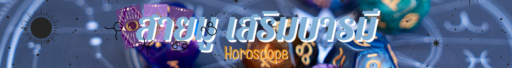
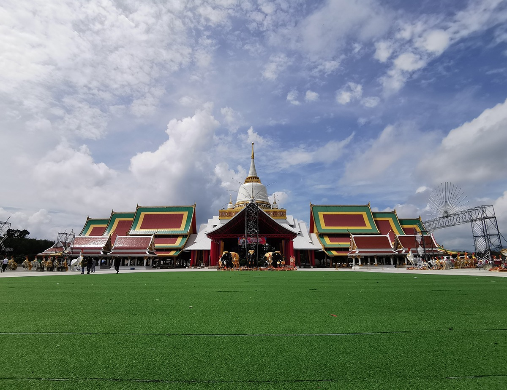

|  |
 |
 |
 |
 |
 |
 |
 |
 |
 |
 |
 |
|---|
วัดพระมหาธาตุวรมหาวิหาร – นครศรีธรรมราช
หลายคนเรียก วัดพระมหาธาตุวรมหาวิหาสั้นๆ ง่ายๆ ว่า “พระบรมธาตุ” แลนด์มาร์กหนึ่งประจำนครศรีธรรมราช แน่นอนว่าซิกเนเจอร์ของวัดแห่งนี้คือองค์พระบรมธาตุอายุเกือบ 900 ปี เป็นพระธาตุทรงลังกาที่ว่ากันว่าไร้เงา ไม่ว่าแสงแดดจะส่องมาจากทิศไหนก็ตาม ทุกปีจะมีประเพณีสำคัญเกิดขึ้นที่นี่คือ พิธี “แห่ผ้าขึ้นธาตุ” หากใครมีเวลาว่างช่วงวันมาฆบูชาของทุกปี เราแนะนำให้มาร่วมพิธีนี้กันสักครั้ง เพราะมีความเชื่อว่าหากเราได้ร่วมขบวนแห่ผ้าขึ้นไปห่มพระธาตุ พรใดที่หวังไว้ก็จะสำเร็จตามที่คิด
ที่อยู่ :
435 ถ. ราชดำเนิน ตำบล ในเมือง อำเภอเมืองนครศรีธรรมราช นครศรีธรรมราช |
|---|
วัดเจดีย์ (ไอ้ไข่) – นครศรีธรรมราช
ไม่มีสายมูคนไหนไม่รู้จัก “วัดเจดีย์ (ไอ้ไข่)” แห่ง อำเภอสิชล จังหวัดนครศรีธรรมราชแน่นอน เพราะในช่วงหนึ่งมีกระแสเรื่องความศักดิ์สิทธิ์ดังขึ้นมา โดยเฉพาะเรื่องโชคลาภและการเงิน จนถึงปัจจุบัน ก็ยังมีชาวบ้านและนักท่องเที่ยวแวะเวียนไปไหว้ขอพรกันไม่ขาดสาย คำว่า “ไอ้ไข่” มาจากเด็กวัดที่หายตัวไป แล้วพอมีรูปปั้นไอ้ไข่มาตั้งอยู่ที่ศาลาวัดเจดีย์ ก็เชื่อกันว่าวิญญาณของเด็กวัดคนนั้นมาอยู่ด้วย และคอยดลบันดาลให้พรผู้คนที่มากราบไหว้ (ซึ่งถ้าสมหวังก็ต้องกลับมาจุดประทัด ถวายรูปปั้นไก่ และของเล่น) แต่วัดเจดีย์ ไม่ได้มีเพียงไอ้ไข่เท่านั้น ยังมี “พ่อท่าน” พระพุทธรูปเก่าแก่ของวัดให้เราสักการะด้วย
วัดเจดีย์ (ไอ้ไข่) เปิดทุกวัน ตั้งแต่ 6.00 – 20.00 น. ใช้เวลาขับรถจากตัวเมืองเพียง 1 ชั่วโมงนิดๆ และด้วยความที่วัดนี้กลายเป็นแหล่งท่องเที่ยวยอดนิยมไปแล้ว ทำให้บริเวณรอบๆ มีร้านค้าร้านอาหารมากมาย หากแพลนทริปว่าจะมาที่นี่ ก็เผื่อเวลาเดินเล่นแถวนี้ได้เลย
ที่อยู่ :
103 ตำบล ฉลอง อำเภอ สิชล นครศรีธรรมราช |
วัดถ้ำเสือ – กระบี่
นอกจากชายหาดสวยๆ เกาะกับทะเลสะอาดตาแล้ว กระบี่ ยังมี วัดถ้ำเสือ เป็นปลายทางห้ามพลาดด้วย วัดนี้อยู่บนเขาแก้วที่เราต้องบริหารกล้ามเนื้อขาให้พร้อมก่อนไปหน่อย เพราะต้องขึ้นบันได 1,237 ขั้น แต่บอกเลยว่าเมื่อขึ้นไปถึงยอดเขาแล้ว คุ้มค่าเหนื่อยแน่นอน เพราะนอกจากจะได้ไหว้พระสงบจิตสงบใจกันแล้ว บริเวณวัดถ้ำเสือยังเป็นจุดชมวิวทะเลหมอก และวิวกระบี่ที่สวยสุดๆ ด้วย บริเวณยอดเขา มีทั้งพระพุทธรูปองค์ใหญ่ให้เรากราบขอพร มีพระธาตุเจดีย์ และรอยพระพุทธบาทจำลอง จากนั้นเมื่อลงมาด้านล่างก็จะพบศาลเจ้าแม่กวนอิมขนาดใหญ่ อีกหนึ่งสิ่งศักดิ์สิทธิ์ที่พึ่งพิงทางใจของหลายคน ซึ่งบริเวณนี้จะมีซุ้มประตูพระโพธิสัตว์ตามแบบสถาปัตยกรรมจีนให้ได้ถ่ายรูปเช็กอินกันด้วย
วัดถ้ำเสือ อยู่ในตำบล กระบี่น้อย ไม่ไกลจากตัวเมืองและไม่ไกลจากสนามบิน ใช้เวลาเดินทางไม่ถึง 1 ชั่วโมง ที่นี่เปิดทุกวันตั้งแต่ 6.00 – 18.00 น.
ที่อยู่ :
35 กระบี่น้อย อำเภอเมืองกระบี่ กระบี่ |
วัดบางโทง (วัดมหาธาตุวชิรมงคล) – กระบี่
ใช้คำว่าสวยได้เปลืองมากสำหรับ “วัดบางโทง” หรือวัดมหาธาตุวชิรมงคล ณ อำเภออ่าวลึก กระบี่ เพราะตัวสถาปัตยกรรมสะกดทุกสายตาได้ตั้งแต่ภายนอก ไปจนถึงงานจิตรกรรมภายใน สิ่งที่โดดเด่นสุดของวัดต้องยกให้ พระมหาธาตุเจดีย์ ซึ่งสูงที่สุดในภาคใต้ ได้รับอิทธิพลการสร้างมาจากมหาเจดีย์พุทธคยา ประเทศอินเดีย เป็นรูปแบบพระธาตุที่พบไม่บ่อยนักในไทย ด้านในของพระมหาธาตุมีงานจิตรกรรมเกี่ยวกับพุทธประวัติที่งดงาม ด้านนอกสร้างเป็นซุ้มประตูอลังการที่ได้กลิ่นอายของศิลปะแบบอินเดีย ส่วนใครอยากไหว้พระขอพร สามารถเข้าไปกราบไหว้พระพุทธทักษิณชัยมงคลในอุโบสถได้ และข้างนอกมีหลวงปู่ทวดองค์ใหญ่ที่ชาวบ้านนิยมมาสักการะเสริมสิริมงคลกัน
วัดบางโทง อยู่ห่างจากตัวเมืองกระบี่พอสมควร ใช้เวลาขับรถราว 1 ชั่วโมง เปิดทุกวันเวลา 8.00 – 18.00 น. หรือหากใครอยากเที่ยววันเดียวกับวัดถ้ำเสือเลย ก็ใช้เวลาเดินทางประมาณ 1 ชั่วโมงเช่นกัน
ที่อยู่ :
หมู่ 3 ตำบลนาเหนือ อำเภออ่าวลึก จังหวัดกระบี่ |